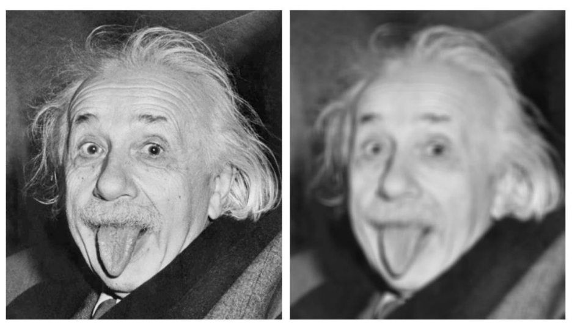

Introduction
This lab consists of a series of exercises designed to explore the concepts of image filtering and smoothing. The first portion of this lab consists of the implementation of four different software functions for performing edge detection. The second portion of this lab consists of the implementation of two image smoothing functions, and an experiment designed to test the application of variable sized smoothing windows on images with different magnitudes of random noise.

Laplacian Edge Detection
The Laplacian edge detector is a second order spatial operator designed to compute the second derivative of an image. It is a moving window operator that computes the second derivative corresponding to the center pixel within the window. It is computed for either four or eight directions as shown below: $$L_{4} = \begin{bmatrix} 0 & -1 & 0 \\ -1 & 4 & -1 \\ 0 & -1 & 0 \end{bmatrix}$$ $$L_{8} = \begin{bmatrix} -1 & -1 & -1 \\ -1 & 8 & -1 \\ -1 & -1 & -1 \end{bmatrix}$$
Sobel Edge Detection
The sobel edge detector is a first order spatial operator designed to compute the gradient $G$ of the image. It is a moving window operator that computes the gradient corresponding to the center pixel within the window. It is computed for the horizontal and vertical directions as shown below: $$G_{H} = \begin{bmatrix} -1 & -2 & -1 \\ 0 & 0 & 0 \\ 1 & 2 & 1 \end{bmatrix}$$ $$G_{V} = \begin{bmatrix} -1 & 0 & 1 \\ -2 & 0 & 2 \\ -1 & 0 & 1 \end{bmatrix}$$ The total gradient can then be computed as follows: $$G = \sqrt{G_{H}^{2} + G_{V}^{2}}$$
Horizontal Line Detection
In order to detect horizontal lines, a 3x3 moving window operator can be used. This moving window operator can be defined as: $$\begin{bmatrix} -1 & -1 & -1 \\ 0 & 0 & 0 \\ 1 & 1 & 1 \end{bmatrix}$$ An example of horizontal line detection is given below:
Vertical Line Detection
In order to detect vertical lines, a 3x3 moving window operator can be used. This moving window operator can be defined as: $$\begin{bmatrix} -1 & 0 & 1 \\ -1 & 0 & 1 \\ -1 & 0 & 1 \end{bmatrix}$$ An example of vertical line detection is given below:
Mean Filter
The mean filter is a moving window operator designed to smooth the distribution of digital numbers in an image. The operator replaces the center pixel in the window with the mean value of all pixels within the window. An example of a 3x3 mean filter is shown below:
An example of the output of a mean filter, computer on the single band Einstein image, is shown below:
Median Filter
The median filter is a moving window operator designed to smooth the distribution of digital numbers in an image. The operator replaces the center pixel in the window with the median value of all pixels within the window.